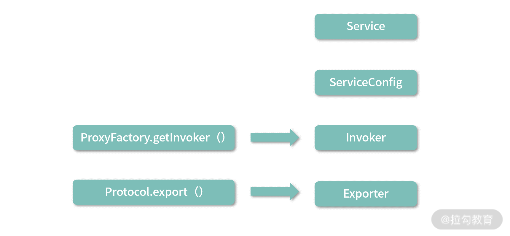
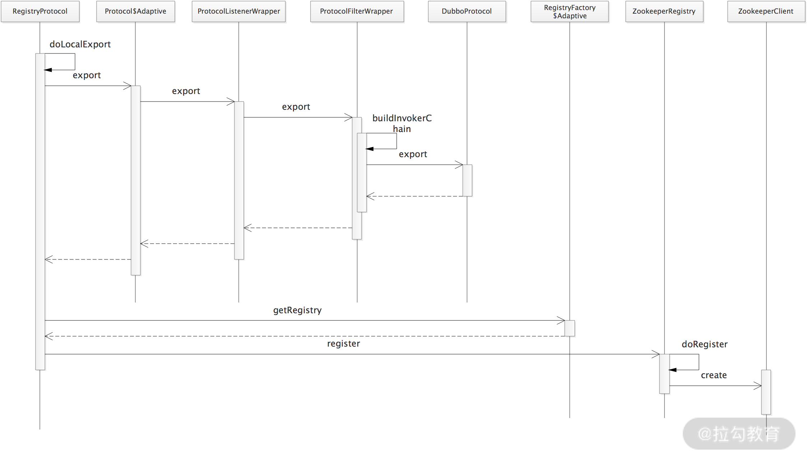

- 00 开篇词 深入掌握 Dubbo 原理与实现，提升你的职场竞争力.md
- 01 Dubbo 源码环境搭建：千里之行，始于足下.md
- 02 Dubbo 的配置总线：抓住 URL，就理解了半个 Dubbo.md
- 03 Dubbo SPI 精析，接口实现两极反转（上）.md
- 04 Dubbo SPI 精析，接口实现两极反转（下）.md
- 05 海量定时任务，一个时间轮搞定.md
- 06 ZooKeeper 与 Curator，求你别用 ZkClient 了（上）.md
- 07 ZooKeeper 与 Curator，求你别用 ZkClient 了（下）.md
- 08 代理模式与常见实现.md
- 09 Netty 入门，用它做网络编程都说好（上）.md
- 10 Netty 入门，用它做网络编程都说好（下）.md
- 11 简易版 RPC 框架实现（上）.md
- 12 简易版 RPC 框架实现（下）.md
- 13 本地缓存：降低 ZooKeeper 压力的一个常用手段.md
- 14 重试机制是网络操作的基本保证.md
- 15 ZooKeeper 注册中心实现，官方推荐注册中心实践.md
- 16 Dubbo Serialize 层：多种序列化算法，总有一款适合你.md
- 17 Dubbo Remoting 层核心接口分析：这居然是一套兼容所有 NIO 框架的设计？.md
- 18 Buffer 缓冲区：我们不生产数据，我们只是数据的搬运工.md
- 19 Transporter 层核心实现：编解码与线程模型一文打尽（上）.md
- 20 Transporter 层核心实现：编解码与线程模型一文打尽（下）.md
- 21 Exchange 层剖析：彻底搞懂 Request-Response 模型（上）.md
- 22 Exchange 层剖析：彻底搞懂 Request-Response 模型（下）.md
- 23 核心接口介绍，RPC 层骨架梳理.md
- 24 从 Protocol 起手，看服务暴露和服务引用的全流程（上）.md
- 25 从 Protocol 起手，看服务暴露和服务引用的全流程（下）.md
- 26 加餐：直击 Dubbo “心脏”，带你一起探秘 Invoker（上）.md
- 27 加餐：直击 Dubbo “心脏”，带你一起探秘 Invoker（下）.md
- 28 复杂问题简单化，代理帮你隐藏了多少底层细节？.md
- 29 加餐：HTTP 协议 + JSON-RPC，Dubbo 跨语言就是如此简单.md
- 30 Filter 接口，扩展 Dubbo 框架的常用手段指北.md
- 31 加餐：深潜 Directory 实现，探秘服务目录玄机.md
- 32 路由机制：请求到底怎么走，它说了算（上）.md
- 33 路由机制：请求到底怎么走，它说了算（下）.md
- 34 加餐：初探 Dubbo 动态配置的那些事儿.md
- 35 负载均衡：公平公正物尽其用的负载均衡策略，这里都有（上）.md
- 36 负载均衡：公平公正物尽其用的负载均衡策略，这里都有（下）.md
- 37 集群容错：一个好汉三个帮（上）.md
- 38 集群容错：一个好汉三个帮（下）.md
- 39 加餐：多个返回值不用怕，Merger 合并器来帮忙.md
- 40 加餐：模拟远程调用，Mock 机制帮你搞定.md
- 41 加餐：一键通关服务发布全流程.md
- 42 加餐：服务引用流程全解析.md
- 43 服务自省设计方案：新版本新方案.md
- 44 元数据方案深度剖析，如何避免注册中心数据量膨胀？.md
- 45 加餐：深入服务自省方案中的服务发布订阅（上）.md
- 46 加餐：深入服务自省方案中的服务发布订阅（下）.md
- 47 配置中心设计与实现：集中化配置 and 本地化配置，我都要（上）.md
- 48 配置中心设计与实现：集中化配置 and 本地化配置，我都要（下）.md
- 49 结束语 认真学习，缩小差距.md
41 加餐：一键通关服务发布全流程
在前面的课时中，我们已经将整个 Dubbo 的核心实现进行了分析。接下来的两个课时，我们将串联 Dubbo 中的这些核心实现，分析 Dubbo服务发布和服务引用的全流程，帮助你将之前课时介绍的独立知识点联系起来，形成一个完整整体。
本课时我们就先来重点关注 Provider 节点发布服务的过程，在这个过程中会使用到之前介绍的很多 Dubbo 核心组件。我们从 DubboBootstrap 这个入口类开始介绍，分析 Provider URL 的组装以及服务发布流程，其中会详细介绍本地发布和远程发布的核心流程。
DubboBootstrap 入口
在[第 01 课时]dubbo-demo-api-provider 示例的 Provider 实现中我们可以看到，整个 Provider 节点的启动入口是 DubboBootstrap.start() 方法，在该方法中会执行一些初始化操作，以及一些状态控制字段的更新，具体实现如下：
public DubboBootstrap start() {
if (started.compareAndSet(false, true)) { // CAS操作，保证启动一次
ready.set(false); // 用于判断当前节点是否已经启动完毕，在后面的Dubbo QoS中会使用到该字段
// 初始化一些基础组件，例如，配置中心相关组件、事件监听、元数据相关组件，这些组件在后面将会进行介绍
initialize();
// 重点：发布服务
exportServices();
if (!isOnlyRegisterProvider() || hasExportedServices()) {
// 用于暴露本地元数据服务，后面介绍元数据的时候会深入介绍该部分的内容
exportMetadataService();
// 用于将服务实例注册到专用于服务发现的注册中心
registerServiceInstance();
}
// 处理Consumer的ReferenceConfig
referServices();
if (asyncExportingFutures.size() > 0) {
// 异步发布服务，会启动一个线程监听发布是否完成，完成之后会将ready设置为true
new Thread(() -> {
this.awaitFinish();
ready.set(true);
}).start();
} else { // 同步发布服务成功之后，会将ready设置为true
ready.set(true);
}
}
return this;
}
不仅是直接通过 API 启动 Provider 的方式会使用到 DubboBootstrap，在 Spring 与 Dubbo 集成的时候也是使用 DubboBootstrap 作为服务发布入口的，具体逻辑在 DubboBootstrapApplicationListener 这个 Spring Context 监听器中，如下所示：
public class DubboBootstrapApplicationListener extends OneTimeExecutionApplicationContextEventListener
implements Ordered {
private final DubboBootstrap dubboBootstrap;
public DubboBootstrapApplicationListener() {
// 初始化DubboBootstrap对象
this.dubboBootstrap = DubboBootstrap.getInstance();
}
@Override
public void onApplicationContextEvent(ApplicationContextEvent event) {
// 监听ContextRefreshedEvent事件和ContextClosedEvent事件
if (event instanceof ContextRefreshedEvent) {
onContextRefreshedEvent((ContextRefreshedEvent) event);
} else if (event instanceof ContextClosedEvent) {
onContextClosedEvent((ContextClosedEvent) event);
}
}
private void onContextRefreshedEvent(ContextRefreshedEvent event) {
dubboBootstrap.start(); // 启动DubboBootstrap
}
private void onContextClosedEvent(ContextClosedEvent event) {
dubboBootstrap.stop();
}
@Override
public int getOrder() {
return LOWEST_PRECEDENCE;
}
}
这里我们重点关注的是exportServices() 方法，它是服务发布核心逻辑的入口，其中每一个服务接口都会转换为对应的 ServiceConfig 实例，然后通过代理的方式转换成 Invoker，最终转换成 Exporter 进行发布。服务发布流程中涉及的核心对象转换，如下图所示：

服务发布核心流程图
exportServices() 方法的具体实现如下：
private void exportServices() {
// 从配置管理器中获取到所有的要暴露的服务配置，一个接口类对应一个ServiceConfigBase实例
configManager.getServices().forEach(sc -> {
ServiceConfig serviceConfig = (ServiceConfig) sc;
serviceConfig.setBootstrap(this);
if (exportAsync) { // 异步模式，获取一个线程池来异步执行服务发布逻辑
ExecutorService executor = executorRepository.getServiceExporterExecutor();
Future<?> future = executor.submit(() -> {
sc.export();
exportedServices.add(sc);
});
// 记录异步发布的Future
asyncExportingFutures.add(future);
} else {// 同步发布
sc.export();
exportedServices.add(sc);
}
});
}
ServiceConfig
在 ServiceConfig.export() 方法中，服务发布的第一步是检查参数，第二步会根据当前配置决定是延迟发布还是立即调用 doExport() 方法进行发布，第三步会通过 exported() 方法回调相关监听器，具体实现如下：
public synchronized void export() {
if (!shouldExport()) {
return;
}
if (bootstrap == null) {
bootstrap = DubboBootstrap.getInstance();
bootstrap.init();
}
// 检查并更新各项配置
checkAndUpdateSubConfigs();
... // 初始化元数据相关服务
if (shouldDelay()) { // 延迟发布
DELAY_EXPORT_EXECUTOR.schedule(this::doExport, getDelay(), TimeUnit.MILLISECONDS);
} else { // 立即发布
doExport();
}
exported(); // 回调监听器
}
在 checkAndUpdateSubConfigs() 方法中，会去检查各项配置是否合理，并补齐一些缺省的配置信息，这个方法非常冗长，这里就不再展示，你若感兴趣的话可以参考源码进行学习。
完成配置的检查之后，再来看 doExport() 方法，其中首先调用 loadRegistries() 方法加载注册中心信息，即将 RegistryConfig 配置解析成 registryUrl。无论是使用 XML、Annotation，还是 API 配置方式，都可以配置多个注册中心地址，一个服务接口可以同时注册在多个不同的注册中心。
RegistryConfig 是 Dubbo 的多个配置对象之一，可以通过解析 XML、Annotation 中注册中心相关的配置得到，对应的配置如下（当然，也可以直接通过 API 创建得到）：
<dubbo:registry address="zookeeper://127.0.0.1:2181" protocol="zookeeper" port="2181" />
RegistryUrl 的格式大致如下（为了方便查看，这里将每个 URL 参数单独放在一行中展示）：
// path是Zookeeper的地址
registry://127.0.0.1:2181/org.apache.dubbo.registry.RegistryService?
application=dubbo-demo-api-provider
&dubbo=2.0.2
&pid=9405
®istry=zookeeper // 使用的注册中心是Zookeeper
×tamp=1600307343086
加载注册中心信息得到 RegistryUrl 之后，会遍历所有的 ProtocolConfig，依次调用 doExportUrlsFor1Protocol(protocolConfig, registryURLs) 在每个注册中心发布服务。一个服务接口可以以多种协议进行发布，每种协议都对应一个 ProtocolConfig，例如我们在 Demo 示例中，只使用了 dubbo 协议，对应的配置是：<dubbo:protocol name="dubbo" />。
组装服务 URL
doExportUrlsFor1Protocol() 方法的代码非常长，这里我们分成两个部分进行介绍：一部分是组装服务的 URL，另一部分就是后面紧接着介绍的服务发布。
组装服务的 URL核心步骤有如下 7 步。
- 获取此次发布使用的协议，默认使用 dubbo 协议。
- 设置服务 URL 中的参数，这里会从 MetricsConfig、ApplicationConfig、ModuleConfig、ProviderConfig、ProtocolConfig 中获取配置信息，并作为参数添加到 URL 中。这里调用的 appendParameters() 方法会将 AbstractConfig 中的配置信息存储到 Map 集合中，后续在构造 URL 的时候，会将该集合中的 KV 作为 URL 的参数。
- 解析指定方法的 MethodConfig 配置以及方法参数的 ArgumentConfig 配置，得到的配置信息也是记录到 Map 集合中，后续作为 URL 参数。
- 根据此次调用是泛化调用还是普通调用，向 Map 集合中添加不同的键值对。
- 获取 token 配置，并添加到 Map 集合中，默认随机生成 UUID。
- 获取 host、port 值，并开始组装服务的 URL。
- 根据 Configurator 覆盖或新增 URL 参数。
下面是 doExportUrlsFor1Protocol() 方法组装 URL 的核心实现：
private void doExportUrlsFor1Protocol(ProtocolConfig protocolConfig, List<URL> registryURLs) {
String name = protocolConfig.getName(); // 获取协议名称
if (StringUtils.isEmpty(name)) { // 默认使用Dubbo协议
name = DUBBO;
}
Map<String, String> map = new HashMap<String, String>(); // 记录URL的参数
map.put(SIDE_KEY, PROVIDER_SIDE); // side参数
// 添加URL参数，例如Dubbo版本、时间戳、当前PID等
ServiceConfig.appendRuntimeParameters(map);
// 下面会从各个Config获取参数，例如，application、interface参数等
AbstractConfig.appendParameters(map, getMetrics());
AbstractConfig.appendParameters(map, getApplication());
AbstractConfig.appendParameters(map, getModule());
AbstractConfig.appendParameters(map, provider);
AbstractConfig.appendParameters(map, protocolConfig);
AbstractConfig.appendParameters(map, this);
MetadataReportConfig metadataReportConfig = getMetadataReportConfig();
if (metadataReportConfig != null && metadataReportConfig.isValid()) {
map.putIfAbsent(METADATA_KEY, REMOTE_METADATA_STORAGE_TYPE);
}
if (CollectionUtils.isNotEmpty(getMethods())) { // 从MethodConfig中获取URL参数
for (MethodConfig method : getMethods()) {
AbstractConfig.appendParameters(map, method, method.getName());
String retryKey = method.getName() + ".retry";
if (map.containsKey(retryKey)) {
String retryValue = map.remove(retryKey);
if ("false".equals(retryValue)) {
map.put(method.getName() + ".retries", "0");
}
}
List<ArgumentConfig> arguments = method.getArguments();
if (CollectionUtils.isNotEmpty(arguments)) {
for (ArgumentConfig argument : arguments) { // 从ArgumentConfig中获取URL参数
... ...
}
}
}
}
if (ProtocolUtils.isGeneric(generic)) { // 根据generic是否为true，向map中添加不同的信息
map.put(GENERIC_KEY, generic);
map.put(METHODS_KEY, ANY_VALUE);
} else {
String revision = Version.getVersion(interfaceClass, version);
if (revision != null && revision.length() > 0) {
map.put(REVISION_KEY, revision);
}
String[] methods = Wrapper.getWrapper(interfaceClass).getMethodNames();
if (methods.length == 0) {
map.put(METHODS_KEY, ANY_VALUE);
} else {
// 添加method参数
map.put(METHODS_KEY, StringUtils.join(new HashSet<String>(Arrays.asList(methods)), ","));
}
}
// 添加token到map集合中，默认随机生成UUID
if(ConfigUtils.isEmpty(token) && provider != null) {
token = provider.getToken();
}
if (!ConfigUtils.isEmpty(token)) {
if (ConfigUtils.isDefault(token)) {
map.put(TOKEN_KEY, UUID.randomUUID().toString());
} else {
map.put(TOKEN_KEY, token);
}
}
// 将map数据放入serviceMetadata中，这与元数据相关，后面再详细介绍其作用
serviceMetadata.getAttachments().putAll(map);
// 获取host、port值
String host = findConfigedHosts(protocolConfig, registryURLs, map);
Integer port = findConfigedPorts(protocolConfig, name, map);
// 根据上面获取的host、port以及前文获取的map集合组装URL
URL url = new URL(name, host, port, getContextPath(protocolConfig).map(p -> p + "/" + path).orElse(path), map);
// 通过Configurator覆盖或添加新的参数
if (ExtensionLoader.getExtensionLoader(ConfiguratorFactory.class)
.hasExtension(url.getProtocol())) {
url = ExtensionLoader.getExtensionLoader(ConfiguratorFactory.class)
.getExtension(url.getProtocol()).getConfigurator(url).configure(url);
}
... ...
}
经过上述准备操作之后，得到的服务 URL 如下所示（为了方便查看，这里将每个 URL 参数单独放在一行中展示）：
dubbo://172.17.108.185:20880/org.apache.dubbo.demo.DemoService?
anyhost=true
&application=dubbo-demo-api-provider
&bind.ip=172.17.108.185
&bind.port=20880
&default=true
&deprecated=false
&dubbo=2.0.2
&dynamic=true
&generic=false
&interface=org.apache.dubbo.demo.DemoService
&methods=sayHello,sayHelloAsync
&pid=3918
&release=
&side=provider
×tamp=1600437404483
服务发布入口
完成了服务 URL 的组装之后，doExportUrlsFor1Protocol() 方法开始执行服务发布。服务发布可以分为远程发布和本地发布，具体发布方式与服务 URL 中的 scope 参数有关。
scope 参数有三个可选值，分别是 none、remote 和 local，分别代表不发布、发布到本地和发布到远端注册中心，从下面介绍的 doExportUrlsFor1Protocol() 方法代码中可以看到：
- 发布到本地的条件是 scope != remote；
- 发布到注册中心的条件是 scope != local。
scope 参数的默认值为 null，也就是说，默认会同时在本地和注册中心发布该服务。下面来看 doExportUrlsFor1Protocol() 方法中发布服务的具体实现：
private void doExportUrlsFor1Protocol(ProtocolConfig protocolConfig, List<URL> registryURLs) {
... ...// 省略组装服务URL的过程
// 从URL中获取scope参数，其中可选值有none、remote、local三个，
// 分别代表不发布、发布到本地以及发布到远端，具体含义在下面一一介绍
String scope = url.getParameter(SCOPE_KEY);
if (!SCOPE_NONE.equalsIgnoreCase(scope)) { // scope不为none，才进行发布
if (!SCOPE_REMOTE.equalsIgnoreCase(scope)) {// 发布到本地
exportLocal(url);
}
if (!SCOPE_LOCAL.equalsIgnoreCase(scope)) { // 发布到远端的注册中心
if (CollectionUtils.isNotEmpty(registryURLs)) { // 当前配置了至少一个注册中心
for (URL registryURL : registryURLs) { // 向每个注册中心发布服务
// injvm协议只在exportLocal()中有用，不会将服务发布到注册中心
// 所以这里忽略injvm协议
if (LOCAL_PROTOCOL.equalsIgnoreCase(url.getProtocol())){
continue;
}
// 设置服务URL的dynamic参数
url = url.addParameterIfAbsent(DYNAMIC_KEY, registryURL.getParameter(DYNAMIC_KEY));
// 创建monitorUrl，并作为monitor参数添加到服务URL中
URL monitorUrl = ConfigValidationUtils.loadMonitor(this, registryURL);
if (monitorUrl != null) {
url = url.addParameterAndEncoded(MONITOR_KEY, monitorUrl.toFullString());
}
// 设置服务URL的proxy参数，即生成动态代理方式(jdk或是javassist)，作为参数添加到RegistryURL中
String proxy = url.getParameter(PROXY_KEY);
if (StringUtils.isNotEmpty(proxy)) {
registryURL = registryURL.addParameter(PROXY_KEY, proxy);
}
// 为服务实现类的对象创建相应的Invoker，getInvoker()方法的第三个参数中，会将服务URL作为export参数添加到RegistryURL中
// 这里的PROXY_FACTORY是ProxyFactory接口的适配器
Invoker<?> invoker = PROXY_FACTORY.getInvoker(ref, (Class) interfaceClass, registryURL.addParameterAndEncoded(EXPORT_KEY, url.toFullString()));
// DelegateProviderMetaDataInvoker是个装饰类，将当前ServiceConfig和Invoker关联起来而已，invoke()方法透传给底层Invoker对象
DelegateProviderMetaDataInvoker wrapperInvoker = new DelegateProviderMetaDataInvoker(invoker, this);
// 调用Protocol实现，进行发布
// 这里的PROTOCOL是Protocol接口的适配器
Exporter<?> exporter = PROTOCOL.export(wrapperInvoker);
exporters.add(exporter);
}
} else {
// 不存在注册中心，仅发布服务，不会将服务信息发布到注册中心。Consumer没法在注册中心找到该服务的信息，但是可以直连
// 具体的发布过程与上面的过程类似，只不过不会发布到注册中心
Invoker<?> invoker = PROXY_FACTORY.getInvoker(ref, (Class) interfaceClass, url);
DelegateProviderMetaDataInvoker wrapperInvoker = new DelegateProviderMetaDataInvoker(invoker, this);
Exporter<?> exporter = PROTOCOL.export(wrapperInvoker);
exporters.add(exporter);
}
// 元数据相关操作
WritableMetadataService metadataService = WritableMetadataService.getExtension(url.getParameter(METADATA_KEY, DEFAULT_METADATA_STORAGE_TYPE));
if (metadataService != null) {
metadataService.publishServiceDefinition(url);
}
}
}
this.urls.add(url);
}
本地发布
了解了本地发布、远程发布的入口逻辑之后，下面我们开始深入本地发布的逻辑。
在 exportLocal() 方法中，会将 Protocol 替换成 injvm 协议，将 host 设置成 127.0.0.1，将 port 设置为 0，得到新的 LocalURL，大致如下：
injvm://127.0.0.1/org.apache.dubbo.demo.DemoService?anyhost=true
&application=dubbo-demo-api-provider
&bind.ip=172.17.108.185
&bind.port=20880
&default=true
&deprecated=false
&dubbo=2.0.2
&dynamic=true
&generic=false
&interface=org.apache.dubbo.demo.DemoService
&methods=sayHello,sayHelloAsync
&pid=4249
&release=
&side=provider
×tamp=1600440074214
之后，会通过 ProxyFactory 接口适配器找到对应的 ProxyFactory 实现（默认使用 JavassistProxyFactory），并调用 getInvoker() 方法创建 Invoker 对象；最后，通过 Protocol 接口的适配器查找到 InjvmProtocol 实现，并调用 export() 方法进行发布。 exportLocal() 方法的具体实现如下：
private void exportLocal(URL url) {
URL local = URLBuilder.from(url) // 创建新URL
.setProtocol(LOCAL_PROTOCOL)
.setHost(LOCALHOST_VALUE)
.setPort(0)
.build();
// 本地发布
Exporter<?> exporter = PROTOCOL.export(
PROXY_FACTORY.getInvoker(ref, (Class) interfaceClass, local));
exporters.add(exporter);
}
InjvmProtocol 的相关实现比较简单，这里就不再展示，你若感兴趣的话可以参考源码进行学习。
远程发布
介绍完本地发布之后，我们再来看远程发布的核心逻辑，远程服务发布的流程相较本地发布流程，要复杂得多。
在 doExportUrlsFor1Protocol() 方法中，远程发布服务时，会遍历全部 RegistryURL，并根据 RegistryURL 选择对应的 Protocol 扩展实现进行发布。我们知道 RegistryURL 是 “registry://” 协议，所以这里使用的是 RegistryProtocol 实现。
下面来看 RegistryProtocol.export() 方法的核心流程：
public <T> Exporter<T> export(final Invoker<T> originInvoker) throws RpcException {
// 将"registry://"协议转换成"zookeeper://"协议
URL registryUrl = getRegistryUrl(originInvoker);
// 获取export参数，其中存储了一个"dubbo://"协议的ProviderURL
URL providerUrl = getProviderUrl(originInvoker);
// 获取要监听的配置目录，这里会在ProviderURL的基础上添加category=configurators参数，并封装成对OverrideListener记录到overrideListeners集合中
final URL overrideSubscribeUrl = getSubscribedOverrideUrl(providerUrl);
final OverrideListener overrideSubscribeListener = new OverrideListener(overrideSubscribeUrl, originInvoker);
overrideListeners.put(overrideSubscribeUrl, overrideSubscribeListener);
// 初始化时会检测一次Override配置，重写ProviderURL
providerUrl = overrideUrlWithConfig(providerUrl, overrideSubscribeListener);
// 导出服务，底层会通过执行DubboProtocol.export()方法，启动对应的Server
final ExporterChangeableWrapper<T> exporter = doLocalExport(originInvoker, providerUrl);
// 根据RegistryURL获取对应的注册中心Registry对象，其中会依赖之前课时介绍的RegistryFactory
final Registry registry = getRegistry(originInvoker);
// 获取将要发布到注册中心上的Provider URL，其中会删除一些多余的参数信息
final URL registeredProviderUrl = getUrlToRegistry(providerUrl, registryUrl);
// 根据register参数值决定是否注册服务
boolean register = providerUrl.getParameter(REGISTER_KEY, true);
if (register) { // 调用Registry.register()方法将registeredProviderUrl发布到注册中心
register(registryUrl, registeredProviderUrl);
}
// 将Provider相关信息记录到的ProviderModel中
registerStatedUrl(registryUrl, registeredProviderUrl, register);
// 向注册中心进行订阅override数据，主要是监听该服务的configurators节点
registry.subscribe(overrideSubscribeUrl, overrideSubscribeListener);
exporter.setRegisterUrl(registeredProviderUrl);
exporter.setSubscribeUrl(overrideSubscribeUrl);
// 触发RegistryProtocolListener监听器
notifyExport(exporter);
return new DestroyableExporter<>(exporter);
}
我们可以看到，远程发布流程大致可分为下面 5 个步骤。
- 准备 URL，比如 ProviderURL、RegistryURL 和 OverrideSubscribeUrl。
- 发布 Dubbo 服务。在 doLocalExport() 方法中调用 DubboProtocol.export() 方法启动 Provider 端底层 Server。
- 注册 Dubbo 服务。在 register() 方法中，调用 ZookeeperRegistry.register() 方法向 Zookeeper 注册服务。
- 订阅 Provider 端的 Override 配置。调用 ZookeeperRegistry.subscribe() 方法订阅注册中心 configurators 节点下的配置变更。
- 触发 RegistryProtocolListener 监听器。
远程发布的详细流程如下图所示：

服务发布详细流程图
总结
本课时我们重点介绍了 Dubbo 服务发布的核心流程。
首先我们介绍了 DubboBootstrap 这个入口门面类中与服务发布相关的方法，重点是 start() 和 exportServices() 两个方法；然后详细介绍了 ServiceConfig 类的三个核心步骤：检查参数、立即（或延迟）执行 doExport() 方法进行发布、回调服务发布的相关监听器。
接下来，我们分析了doExportUrlsFor1Protocol() 方法，它是发布一个服务的入口，也是规定服务发布流程的地方，其中涉及 Provider URL 的组装、本地服务发布流程以及远程服务发布流程，对于这些步骤，我们都进行了详细的分析。
© 2019 - 2023 Liangliang Lee. Powered by gin and hexo-theme-book.